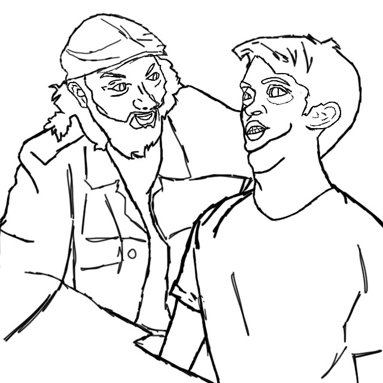
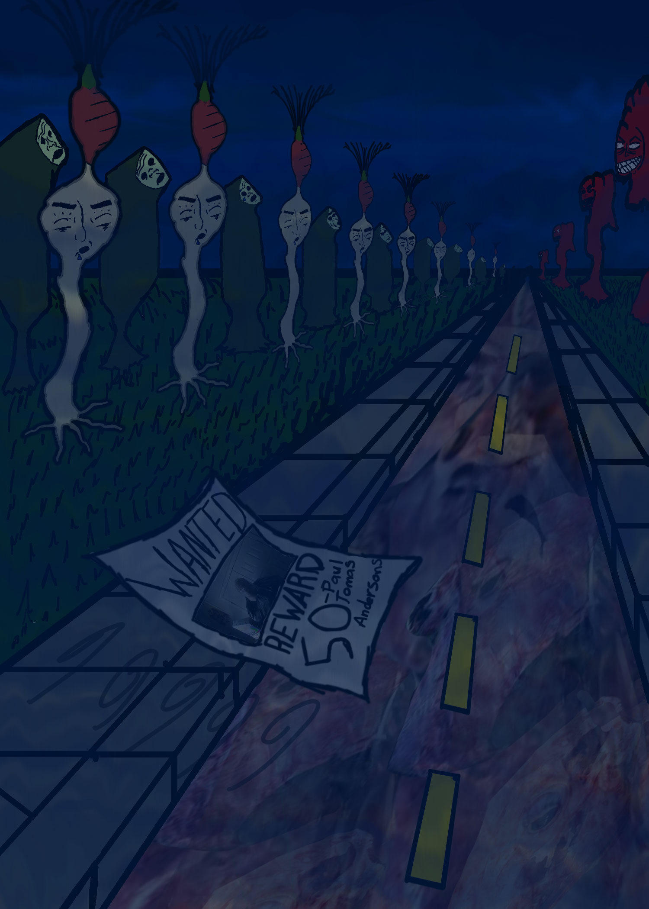
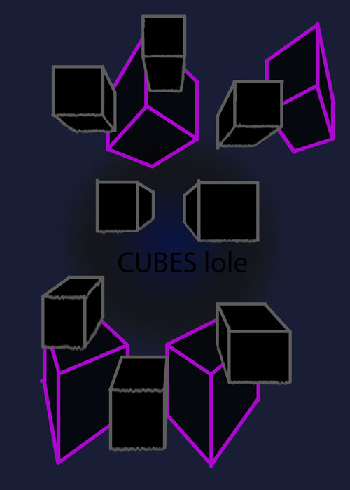

This is my first website hi
im just gonna post art here
heres a weird one

Hey look at this its cool too
this peice was actually made for a perspective assignment in this class, uh, its probably the best use of color ive ever used color for so i am proud of myself more or less.
Note: I was listening to the Silent Hill 2 soundtrack when i was making this, so i have that soundtrack to owe for the atmosphere i tried to imply in this.
More perspective stuff

This is what i did when i was first learning perspective theres about nothing else i have to say about it.
more interesting stuff below